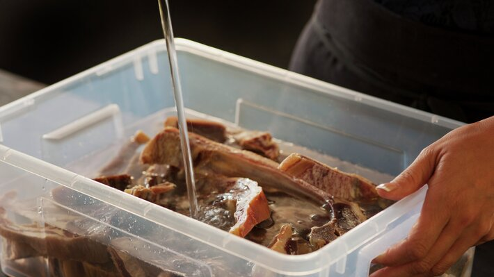
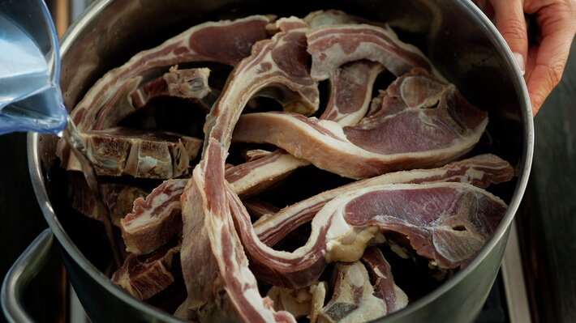
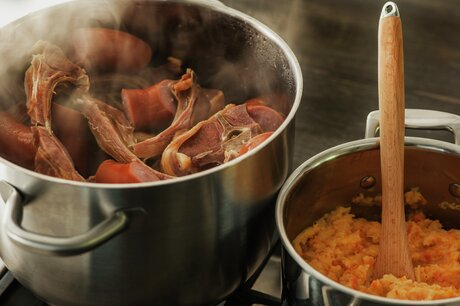

Oppskrift på Pinnekjøtt for Dummies
-
Beregn ca. 400 g pinnekjøtt per person. Vann ut pinnekjøttet i rikelig med vann i ca. 30 timer. La det
stå i romtemperatur.

-
Legg en metallrist eller bjørkepinner uten bark i bunnen av en vid kjele. Fyll på vann så det står i
høyde med risten. Legg pinnekjøttet over og sett på lokk. Kok opp, senk varmen og la pinnekjøttet
småkoke/trekke ved 85-95 grader ca. 3 timer, eller til kjøttet løsner fra bena. Pass på så det ikke
koker tørt, fyll eventuelt på med mer vann. Biter av vossakorv kan dampes sammen med pinnekjøttet de
siste 15 minuttene.

-
Skrell kålrot, gulrot og potet. Del dem i grove biter og kok dem møre i lettsaltet vann. Hell av
kokevannet og mos grønnsakene.

-
Ha i smør og fløte. Smak til med salt og pepper, og eventuelt litt revet muskat.

Bon Appétit!